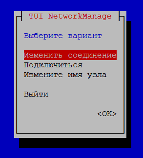
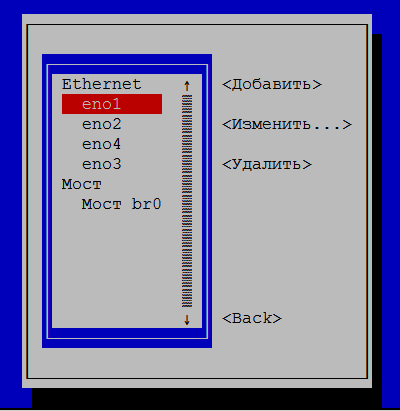
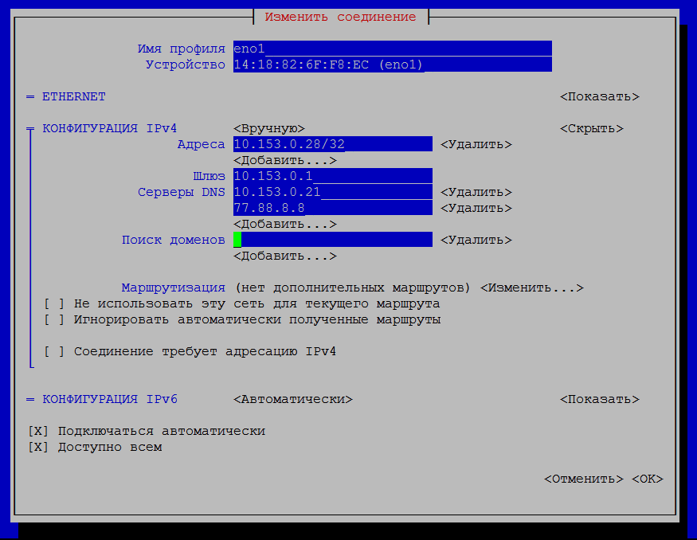
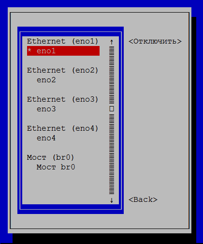

1. Просмотр текущей конфигурации сети
Вначале нужно посмотреть текущие настройки сети. Сделать это можно с помощью следующих команд.
Примечание: далее в примерах показано как конфигурировать одну сетевую карточку в сервере, в котором вставлено 4 сетевых карточки.
Посмотреть IP-адрес на каждом сетевом интерфейсе:
# ip addr
1: lo: <LOOPBACK,UP,LOWER_UP> mtu 65536 qdisc noqueue state UNKNOWN group default qlen 1
link/loopback 00:00:00:00:00:00 brd 00:00:00:00:00:00
inet 127.0.0.1/8 scope host lo
valid_lft forever preferred_lft forever
inet6 ::1/128 scope host
valid_lft forever preferred_lft forever
2: eno1: <BROADCAST,MULTICAST,UP,LOWER_UP> mtu 1500 qdisc mq state UP group default qlen 1000
link/ether 14:18:82:6f:f8:ec brd ff:ff:ff:ff:ff:ff
inet 10.153.0.231/16 brd 10.153.255.255 scope global dynamic eno1
valid_lft 175048sec preferred_lft 175048sec
inet6 fe80::77d0:dad3:c3a8:7358/64 scope link
valid_lft forever preferred_lft forever
3: eno2: <NO-CARRIER,BROADCAST,MULTICAST,UP> mtu 1500 qdisc mq state DOWN group default qlen 1000
link/ether 14:18:82:6f:f8:ed brd ff:ff:ff:ff:ff:ff
4: eno3: <NO-CARRIER,BROADCAST,MULTICAST,UP> mtu 1500 qdisc mq state DOWN group default qlen 1000
link/ether 14:18:82:6f:f8:ee brd ff:ff:ff:ff:ff:ff
5: eno4: <NO-CARRIER,BROADCAST,MULTICAST,UP> mtu 1500 qdisc mq state DOWN group default qlen 1000
link/ether 14:18:82:6f:f8:ef brd ff:ff:ff:ff:ff:ff
6: br0: <NO-CARRIER,BROADCAST,MULTICAST,UP> mtu 1500 qdisc noqueue state DOWN group default qlen 1000
link/ether 1a:ac:77:ea:ed:ab brd ff:ff:ff:ff:ff:ff
Здесь нужно обратить внимание, что сетевые карточки на 2017 год обозначаются не ethX, а enoX, причем счет идет с единицы. Нас будет интересовать карточка eno1. Параметры "scope global dynamic eno1" говорят о том, что IP-адрес получен динамически (нужно уточнить, так ли это...).
Таблица маршрутизации:
# ip route
default via 10.153.0.1 dev eno1 proto static metric 100
10.153.0.0/16 dev eno1 proto kernel scope link src 10.153.0.231 metric 100
Сведения о DNS-сервере:
# dig | grep SERVER
;; SERVER: 77.88.8.8#53(77.88.8.8)
В принципе, можно посмотреть сведения о IP адресах сетевых устройств по-старинке, через программу ifconfig, если она установлена. У нее более человекочитаемый вывод:
# ifconfig
br0: flags=4099<UP,BROADCAST,MULTICAST> mtu 1500
ether 8a:ac:77:ea:ed:ab txqueuelen 1000 (Ethernet)
RX packets 0 bytes 0 (0.0 B)
RX errors 0 dropped 0 overruns 0 frame 0
TX packets 0 bytes 0 (0.0 B)
TX errors 0 dropped 0 overruns 0 carrier 0 collisions 0
eno1: flags=4163<UP,BROADCAST,RUNNING,MULTICAST> mtu 1500
inet 10.153.0.231 netmask 255.255.0.0 broadcast 10.153.255.255
inet6 fe80::77d0:dad3:c3a8:7358 prefixlen 64 scopeid 0x20<link>
ether 94:18:82:6f:f8:ec txqueuelen 1000 (Ethernet)
RX packets 2616536 bytes 879913134 (839.1 MiB)
RX errors 0 dropped 0 overruns 0 frame 0
TX packets 297129 bytes 30950356 (29.5 MiB)
TX errors 0 dropped 0 overruns 0 carrier 0 collisions 0
device interrupt 16
eno2: flags=4099<UP,BROADCAST,MULTICAST> mtu 1500
ether 94:18:82:6f:f8:ed txqueuelen 1000 (Ethernet)
RX packets 0 bytes 0 (0.0 B)
RX errors 0 dropped 0 overruns 0 frame 0
TX packets 0 bytes 0 (0.0 B)
TX errors 0 dropped 0 overruns 0 carrier 0 collisions 0
device interrupt 17
eno3: flags=4099<UP,BROADCAST,MULTICAST> mtu 1500
ether 94:18:82:6f:f8:ee txqueuelen 1000 (Ethernet)
RX packets 0 bytes 0 (0.0 B)
RX errors 0 dropped 0 overruns 0 frame 0
TX packets 0 bytes 0 (0.0 B)
TX errors 0 dropped 0 overruns 0 carrier 0 collisions 0
device interrupt 16
eno4: flags=4099<UP,BROADCAST,MULTICAST> mtu 1500
ether 94:18:82:6f:f8:ef txqueuelen 1000 (Ethernet)
RX packets 0 bytes 0 (0.0 B)
RX errors 0 dropped 0 overruns 0 frame 0
TX packets 0 bytes 0 (0.0 B)
TX errors 0 dropped 0 overruns 0 carrier 0 collisions 0
device interrupt 17
lo: flags=73<UP,LOOPBACK,RUNNING> mtu 65536
inet 127.0.0.1 netmask 255.0.0.0
inet6 ::1 prefixlen 128 scopeid 0x10<host>
loop txqueuelen 1 (Local Loopback)
RX packets 17 bytes 1441 (1.4 KiB)
RX errors 0 dropped 0 overruns 0 frame 0
TX packets 17 bytes 1441 (1.4 KiB)
TX errors 0 dropped 0 overruns 0 carrier 0 collisions 0
2. Простой путь конфигурирования
Если в системе используется NetworkManager, то можно воспользоваться текстовой утилитой nmtui, которая предоставляет ncurses-интерфейс в текстовом режиме. По-умолчанию эта утилита не ставится вместе с NetworkManager, поэтому ее нужно поставить вручную. Для этого нужно установить пакет NetworkManager-tui.
Проверить, стоит ли в системе NetworkManager можно командой:
# rpm -qa | grep etwork
NetworkManager.x86_64
NetworkManager-glib.x86_64
NetworkManager-team.x86_64
NetworkManager-tui.x86_64
dracut-network.x86_64
glib-networking.x86_64
network-manager-applet.x86_64
NetworkManager-config-server.x86_64
NetworkManager-glib.i686
NetworkManager-glib-devel.i686
NetworkManager-glib-devel.x86_64
cockpit-networkmanager.noarch
kf5-networkmanager-qt.i686
kf5-networkmanager-qt.x86_64
libproxy-networkmanager.x86_64
python-networkmanager-doc.noarch
python2-networkmanager.noarch
Тут нужно обратить внимание, что пакеты для NetworkManager в 2017 году именуются как попало: и с использованием ВерблюжьегоРегистра, и с использованием только строчных букв. Поэтому поиск надо проводить по строке "etwork" чтобы увидеть все соответствующие пакеты, либо писать соответствующее регулярное выражение типа "[Nn]etwork[Mm]anager".
Установить пакет с утилитой nmtui можно командой:
dnf install NetworkManager-tui
После установки можно от рута запустить команду nmtui, и откроется текстовый интерфейс:

Рисунок 1
При нажатии "Изменить соединение" откроется выбор интерфейса, который надо сконфигурировать:

Рисунок 2
Выбирается сетевой интерфейс, потом с помощью клавиши TAB выбирается действие "Изменить", нажимается Enter, и откроется окно редактирования параметров:

Рисунок 3
При нажатии ОК параметры будут запомнены, но не применятся. Для того, чтобы применить параметры, нужно войти в режим "Подключиться" (см. рис.1), выбрать нужный сетевой интерфейс, и нажать "Отключить", а потом снова этот же интерфейс включить путем нажатия на кнопку "Включить":

После этих действий рекомендуется посмотреть состояние подключения командами из раздела 1, и убедиться, что сеть настроена правильно.
3. Сложный путь - конфигурировать сеть вручную
Чтобы сконфигурировать сеть через файлы, в первую очередь нужно отключить сервис NetworkManager. Данный сервис обычно устанавливается вместе с графическими средами типа KDE/Gnome/MATE, но может стоять и при отсутствии графических сред. Перед ручным конфигурированием его нужно отключить:
Остановка сервиса и запрет его автостарта:
sudo systemctl stop NetworkManager
sudo systemctl disable NetworkManager
Для того чтобы далее снова включить сервис, можно будет воспользоваться командой:
sudo systemctl start network.service
4. Редактирование файла настройки интерфейса ifcfg-<имя_интерфейса>
Для настройки интерфейса eno1 нужно открыть файл /etc/sysconfig/network-scripts/ifcfg-eno1, и отредактировать его. Если такого файла нет, его нужно создать.
Если этот интерфейс ранее конфигурировался автоматически по DHCP, то содержимое этого файла будет примерно таким:
HWADDR=14:18:82:6F:F8:EC
TYPE=Ethernet
BOOTPROTO=dhcp
DEFROUTE=yes
IPV4_FAILURE_FATAL=no
IPV6INIT=yes
IPV6_AUTOCONF=yes
IPV6_DEFROUTE=yes
IPV6_FAILURE_FATAL=no
IPV6_ADDR_GEN_MODE=stable-privacy
NAME=eno1
UUID=15371ad3-5c7d-37ea-bab7-fbb7287686d7
ONBOOT=yes
AUTOCONNECT_PRIORITY=-999
DNS1=77.88.8.8
PEERDNS=no
PEERROUTES=yes
IPV6_PEERDNS=yes
IPV6_PEERROUTES=yes
IPV6_PRIVACY=no
ZONE=home
BRIDGE=br0
В этом файле есть четыре обязательные опции, которые в обязательном порядке всегда должны присутствовать:
HWADDR=14:18:82:6F:F8:EC
TYPE=Ethernet
BOOTPROTO=dhcp
ONBOOT=yes
Где:
Для того, чтобы вручную задать IP-адрес, необходимо привести содержимое файла к такому виду:
HWADDR=14:18:82:6F:F8:EC
TYPE=Ethernet
BOOTPROTO=none
IPADDR0=REPLACE.YOUR.IP.ADDRESS
PREFIX0=23
GATEWAY0=REPLACE.YOUR.GATEWAY.IP
DNS0=REPLACE.YOUR.DNS.IP
DNS1=REPLACE.YOUR.SECOND.DNS.IP (проверить)
DEFROUTE=yes
IPV4_FAILURE_FATAL=no
IPV6INIT=no
IPV6_AUTOCONF=no
IPV6_DEFROUTE=yes
IPV6_FAILURE_FATAL=no
IPV6_PRIVACY=no
NAME=REPLACE.YOUR.INTERFACE.NAME (говорят что необязательно, ибо имя есть в названии файла)
ONBOOT=yes
DOMAIN="REPLACE.YOUR.DOMAIN"
NM_CONTROLLED="no"
Видно, что содержимое файла для варианта DHCP и для варианта со статическим IP адресом сильно отличаются. Из этого следует, что настроить IP-адрес так же просто, как это можно сделать в старых линухах, не получится. Тут все гораздо замудрёней, и без шпаргалки типа этой никуда не уедешь.
5. Редактирование файла настройки маршрутизации route-<имя_интерфейса>
Для настройки маршрутизации интерфейса eno1 нужно открыть файл /etc/sysconfig/network-scripts/route-eno1, и отредактировать его. Если такого файла нет, его нужно создать. Настройки, заданные в этом файле, относятся к статической маршрутизации, и применяются в момент включения интерфейса. Они сохраняются и при перезагрузке компьютера.
Файл нужно привести к такому виду:
# Маршрут "по-умолчанию"
ADDRESS0=0.0.0.0
NETMASK0=0.0.0.0
GATEWAY0=REPLACE.YOUR.GATEWAY.IP
METRIC0=0
# Маршрут сети
ADDRESS1=REPLACE.YOUR.NETWORK.IP
NETMASK1=REPLACE.YOUR.NETMASK.IP
GATEWAY1=0.0.0.0
METRIC1=0
Сведения о таком формате фaйла route-X содержатся в статье:
Однако практика показывает, что на самом деле формат должен быть другим, примерно таким:
default via 192.168.0.1 dev eth0
10.10.10.0/24 via 192.168.0.10 dev eth0
172.16.1.10/32 via 192.168.0.10 dev eth0
О данном формате можно прочитать в проекте документации (draft) на Fedora 25:
В общем, с этим нужно разбираться дальше.
6. Перезапуск сетевого интерфейса
После внесения изменений в настроечные файлы, нужно перезапустить сетевой интерфейс, чтобы применились новые настройки. Делается это под рутом командами:
ifdown eno1
ifup eno1
После этих действий так же рекомендуется посмотреть состояние подключения командами из раздела 1, и убедиться, что сеть настроена правильно.